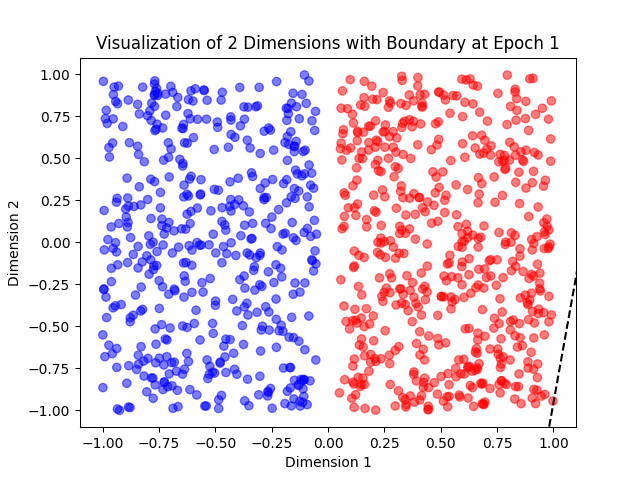

As part of my Machine Learning course with Professor Gabor Lugosi, part of our homework was to code the Perceptron Algorithm from scratch and
Early demonstrations of the perceptron were promising. It was able to perform simple pattern recognition tasks such as character recognition. The perceptron was one of the first algorithms that could learn from data, adjusting its weights based on errors made in predictions. The original implementation of the perceptron was a simple layer with adjustable weights, taking binary inputs and producing a single binary output.